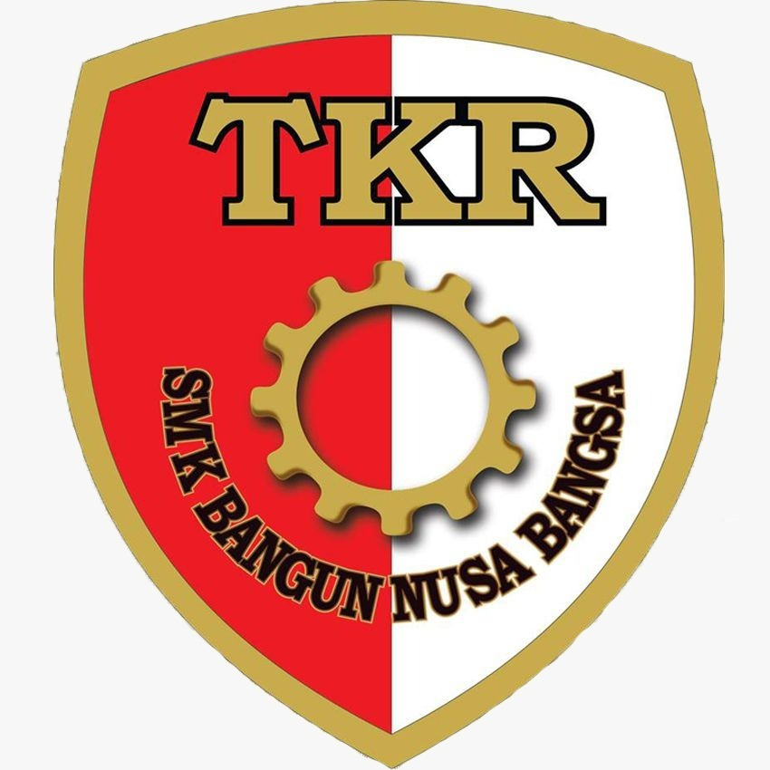

Kurikulum Mutakhir untuk Karier Masa Depan
Pilihan program keahlian berstandar industri dengan sarana praktik terlengkap dan prospek karier yang sangat luas.
Teknik Komputer & Jaringan (TKJ)
Kuasai infrastruktur jaringan skala enterprise, arsitektur cloud computing, administrasi server Linux/Windows, dan sistem pertahanan keamanan siber (cybersecurity).
Kompetensi Utama:
Prospek Karier:
Network Engineer, Cloud Administrator, Cyber Security Specialist, IT Support Officer, ISP Technician.

Teknik Kendaraan Ringan (TKR)
Pelajari pemeliharaan kendaraan modern, overhaul mesin bensin & diesel injeksi (EFI), kelistrikan bodi, AC kendaraan, serta diagnosis komputer ECU mobil modern.
Kompetensi Utama:
Prospek Karier:
Automotive Diagnostic Technician, Service Advisor, Bengkel Resmi Specialist, Quality Control Otomotif, Wirausaha Bengkel.
Akuntansi & Keuangan Lembaga
Kuasai pengelolaan keuangan digital, sistem perpajakan e-faktur, audit dasar, perbankan modern, dan pengoperasian perangkat lunak akuntansi standar industri terkemuka.
Kompetensi Utama:
Prospek Karier:
Junior Financial Accountant, Tax Consultant Assistant, Bank Customer Service / Teller, Finance Administration Officer.